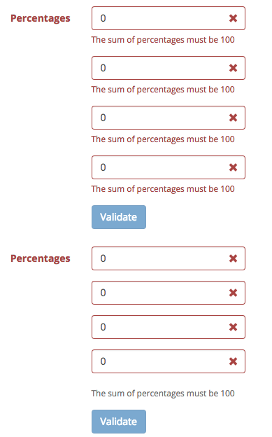

← Examples
{% include share.html %}This example introduces the approach to validate percentage fields which have to satisfy two conditions:
To find out the solution for our requirement, we can think of using the normal text inputs for percentage fields. ALl the inputs have the same name and are initialized with default value as following:
{% highlight html %} {% endhighlight %}Now, for the first condition, we can use the between validator to ask the percentage to be between 0 to 100:
{% highlight javascript %} $('#sumForm').formValidation({ fields: { 'percentage[]': { validators: { between: { min: 0, max: 100, message: 'The percentage must be between 0 and 100' } } } } }); {% endhighlight %}In order to solve the second requirement, we need to use the callback validator. The idea is quite simple:
The following snippet code shows how it is implemented:
{% highlight javascript %} $('#sumForm').formValidation({ fields: { 'percentage[]': { validators: { between: { ... }, callback: { message: 'The sum of percentages must be 100', callback: function(value, validator, $field) { var percentage = validator.getFieldElements('percentage[]'), length = percentage.length, sum = 0; for (var i = 0; i < length; i++) { sum += parseFloat($(percentage[i]).val()); } if (sum === 100) { validator.updateStatus('percentage[]', 'VALID', 'callback'); return true; } return false; } } } } } }); {% endhighlight %}You can try the implementation by playing with the form below:
{% include demo/tabs.html id="basic" frameworks="bootstrap" dir="basic" codes="programmatic" %}If you click the Validate button in the form above, because all fields don't pass
the callback validator, all messages are shown up.
We can optimize it a little bit by using the err option to indicate the same container for placing messages. Since we use the same name for fields, there's only one message shown at any time.
{% highlight html %}The following image shows how the messages are shown when using (and not) the err option:

{% include demo/tabs.html id="message-container" frameworks="bootstrap" dir="message-container" codes="programmatic" %}Instead of the normal text inputs, we can use a slider to allow user to choose a percentage value between 0 and 100. In this approach, we will use the Bootstrap Slider which works well with the Bootstrap framework.
Using the slider ensures the value will belong to the given ranges, so the between validator isn't necessary in this case.
After dragging the slider, we need to revalidate the associated input:
{% highlight javascript %} $('#sumForm') .find('[name="percentage[]"]') .each(function() { $(this) // Create a slider .slider({ min: 0, max: 100, step: 1, tooltip: 'hide' }) // Triggered after dragging the slider .on('slide', function(e) { var $field = $(e.target); $field .closest('.form-group') .find('.percentageValue') .html($field.slider('getValue') + '%'); // Revalidate the field $('#sumForm').formValidation('revalidateField', $field); }); }) {% endhighlight %}